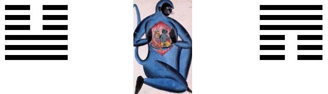

the knowledge of human nature and the future of humanity, in light of the evolution of a psyche that is subject to innate creative nature. And how this in itself imperceptible aspect of the human psyche makes us fully human and will determine the future of humanity.
We will explore the creative forces and structural elements within the human psyche that are involved in personal psychological development and our general psychological evolution. We will show that human evolution does not solely depend on shaping external factors and more or less ‘blind’ biological and social forces, but that a creative intra-psychic principle guiding individual development and general human progress also must be.
This principle, manifest as an innate natural creative force within the human psyche, is the dominant factor that will shape the future of humanity. In itself, it is of unknown origin and out of reach of human perception and reason. It is one of nature's mysteries and manifests itself from the unconscious part of the psyche and we could call it 'Spirit'. We can only know of its existence indirectly by the presence and activity of its content within the psyche and its influence on our being and social life. In tomorrow's world, it will become a significant psychological factor to consider in many aspects of living and attaining knowledge of life.
This instinctual urge ( or innate spiritual drive) to individuate, manifests as an endo-psychic drive, aims at expanding conscious-awareness of our inner and outer reality and seeks us to make the two agree under a new conscious light. This unifying light enables the individual to function as a conscious and unconscious psychic whole, as a true individual, an undivided duality. Such individuals know the nature and limits of the ego-conscious part and have sufficient knowledge of the unconscious part of the psyche including their innate spirit.
These psychologically whole people have deep knowledge of their full self and thus of human nature in general, and as a consequence, they are wise and able to make choices to the best end of the human being. They have an excellent perception of reality and an increased capacity for reason. More importantly, they have a high ethical ability, which is the main characteristic of a fully grown individual. These traits are effective tools against the ongoing moral decay and general destruction that we are facing in the world of today.
This within the psyche natural creative activity that guides us to psychological maturation and to becoming conscious-aware individuals, can be observed, convincingly explained, empirically proven, and personally experienced. Whether we perceive this innate creative force and guiding principle as a creative divine Spirit within or prefer the 'simpler' materialistic explanation that our physiological brain is producing this creative activity within itself, does not matter in the broader view of our nature. Because in finality, we have to accept the presence of this mysterious innate drive, that follows the law of nature, and have to become more fully human. Become individuals who are conscious-aware of our outer and inner world and know how these are interrelated, and act according to it - - -
[ [ CONTINUE......This study is for people who take their life, the fullness of human nature and reality as it is, earnestly. Its for people who are in search of deeper insight into human reality, who want to know the higher meaning and values of life. We will explore humanity’s future by way of individual development and
[…]The notion that nature creates new content within the psyche and by this has a guiding hand in our personal psychological development, psychic functioning and general human psychological evolution will have a profound impact on a variety of sciences, our religious views, and established conceptions regarding the meaning and future of human life.It will make significant changes
[…]The maturity of individuals corresponds with the degree of conscious-awareness of their inner and outer world, to be attained during life. This conscious light can be developed by the mystical struggle for enlightenment or by the conscious light-making individuation-process, which is a more ‘down to earth’ path and suitable for all people. We will compare
[…]
Becoming Human
Self-knowledge means……… knowing the nature of the Self . . . .>>
Individuation in general
Nature wants us to become mature and conscious-aware human beings, individual men and women with a high degree of psychic autonomy, rounded personalities that are able to straddle the biological and the spiritual aspect of their nature. Individuals, who have a mind of their own and a differentiated feeling-life. Personalities who are less influenced by […] ..
Defining ‘Individual’. The Self and its ego-aspect as total personality.
Under the ‘individual’ we understand a personality who has developed him or herself from a state of too dominant ego-centrism and individualism to being a psychologically undivided duality. This state of mind results from the attainment of enough objective conscious light and knowledge of oneself to be able to distinguish between content that belongs to […] ..
Self-knowledge cannot be attained without meeting our Self through others . . . >>
INDIVIDUATION AS ‘ WILL’ OF CREATIVE NATURE WITHIN
From human instinct to realizing the image of the Anthropos. The ...
Creative human
Creative people have often felt that they for their productivity ...
Structure and dualism of the psyche ; the objective and subjective psyche
The objective and the subjective psyche-the outer and inner world ...
Archetypes as instincts and fundamental structural elements of the psyche.
The ‘living’ Unconscious – living innate creative nature– ...
The individuating human is a Self realizing human.
The human being who has taken upon him- or herself the task of in ...
From perception to conscious-awareness
Individuation means becoming conscious-aware of our outer and inn ...
Cognition – Full reason
[ In development . . . . . ...
Boundaries of imagination, perception and reason
The limits of our rational intellect can be tested in daily life. ...
Artificial intelligence versus the human mind, its capacity and abilities
”He has seen real people”, words heard during an arch ...
Autism – when the connection between the ego-centred part of the psyche with the wider Self is obstructed
… and therefore the instinct of human bonding and its corre ...
Gender identity, and gender confusion in light of the androgynous aspect of the human psyche.
Making sense of modern-day confusion around gender identity in li ...
We all are subject to the bend-or-break forces of creative nature, its will, and the evolution of the psyche. Divine nature has the last word
Blank for now ...
Individuation as innate natural and/or spiritual drive
Individuation – bringing the BIOLOGICAL and the SPIRITUAL aspect of human nature together under a new conscious light
The human being is formed between the external-by biological-social dominated world and the internal world where intra-psychic content has it say. The ego-conscious part of our psyche is forged between the hammer and anvil of these two realities-as we often painfully are aware of–when these world clash or are in disagreement. In the course of […]
Defining the Self—–The ego-complex and the Unconscious as the main factors in individuation.
The SELF must be considered the whole of our personality, it contains the ego-complex with its own personal unconscious and is permeated and encompassed by the (collective) Unconscious, which is the origin of the archetypes that drive the individuation towards becoming a highly conscious and mature human being. The human psyche is divided into a […]
Archetypes, the creative Self and the individuation process
The Self, comprises the body, the ego-complex, the conscious and the unconscious psyche, including the inherent spirit. The Self in its dynamic aspect is a living whole and an entity that continuously renews improves and transforms itself. We, as ego-centred conscious beings, partake in and have a crucial function in this natural process. The ego […]
Natural innate conscience guiding individuation – our guiding spirit or ‘spiritus rector’ , and the creator of wisdom.
Not only has nature provided us with a capacity of reason to navigate outer and inner life, but it has also given us a natural conscience that can serve us as Spiritus Rector, a guiding spirit that brings us to a higher ethical state of human being. It is very important to pay attention to […]
———— 1000 WORDS IN IMAGES———-
Hanuman, an image produced by the creative Indian religious intuition, reminds us to become more conscious of the reality that we are ‘spiritualized’ (blue) animals (monkeys) and, thus, have to pay attention to the lower and the higher the biological and spiritual (the archetypal)- aspect of our nature. By ‘spiritual’, we mean the archetypal force […]

— ANTHROPOS —
The image of Anthropos, as symbol and personification of the universal Self, or the universal spirit we partake in with body and mind. In the form of the personal innate creative Spirit, we can perceive it as the image of the instinctual or as the spiritual drive to and the goal of individuation. In these […]
Logos & Eros – the two wings of the whole-making spirit : the masculine and feminine creative principles.
Eros and Logos, these two wings of the creating aspect of the Spirit are in highest the spirits of love and truth. To be lived and be united as one under One conscious light through recognition and the realization of the Feminine side of the creating Spirit, also known as Sophia, Shekhinah, Sakina in Islam, enabling […]
Realizing Anthropos. Individuation as a process of spiritualization.
Adam Kadmon –The Man of Light within – Shekinah; Sophia – Christ as the spirit of truth, love and the good. The realization of the Messianic spirit, the spirit of Righteousness (tzaddik)
Spiritual development in Baha’i Faith and the process of spiritualization in Tzaddik .
The Baha’i religious movement seeks to brings the Spirit of order, peace and the good into the world by lifting people up to a higher level of human being. It does this through practices and teachings that focus on the ethical cultivation of the individual. Baha’i envisions a global nation with highly cultivated people who […]
INDIVIDUATION AS ‘WILL’ OF CREATIVE SPIRIT WITHIN
Individuation depends on the interaction between ego-complex with ...
‘Spirit’ defined
“The Spirit breathes where he will, and you hear his voice, ...
Spirit as origin of mythology and religion
Religious expressions, from animistic nature religion to the high ...
Archetypes as tools of the creative Spirit
Archetypes can be perceived as spiritual forms forces and structu ...
The creative Spirit of Nature as a whole (Holy) making Spirit. From a guiding spirit to a spirit of righteousness
The Holy Spirit manifests itself within the human being as a whol ...
Hindu religion & philosophy -Hindu pantheon-God as One and many-Vishnu & Shiva – Brahma & Sarasvati – Prktri & Purusha-Samkhya-Spiritual development through separation and union of the opposites. Shiva&Shakti- Tantra.
...
Yoga-Meditation and western interpretation-The ethical path (atman in all)-Karma yoga and Krishna-Buddhism-The Bodhisattva and Nirvana-bringing Yin and Yang in union in Tao- Zen – I Ching.
Conscious meditation, imagination and reflection on inner spirit. ...
Spiritual enlightenment – the spiritually oriented individual–Personality
Spiritual enlightenment enables one to observe the presence and a ...
The correct religious attitude – Deed over creed; Tikkun Olam ; Bhakti – Sikhism
Take away from Me the noise of your songs; for I will not he ...
TRUTH—trust in belief – faith in truth
The more truth is realized the lesser the conflict between reason ...
The future of religion. Modern God-image. Religion as an instrument in service of creative Spirit. Oneness of the Abrahamic faiths. Saving Islam?
A living spirit- innate – to be realized by means of two ma ...
The Individuation process in down to earth psychological language
Self-realization in the practice of everyday life.
Becoming conscious of our outer and our inner reality, and by that of our innate spirit, is at the center of individuation. The maturation of the individual needs a life of full self-experience through courageously engaging with one’s outer and inner reality . A life to be lived with a passion for nature’s beauty and […]
The nature of the individuated human
The characteristics of the individuated personality have already been noticed, observed and described by Abraham Maslow and Carl Jung. Maslow concerned himself more about the extraverted appearance, the values these fully mature people hold dear. He described their attitude to life, motivation, typical traits, and behaviours and how they contrasted with the general population. (Frank […]
TOMORROW'S WORLD
Futurology — futurism
How to make a reliable, durable and above all, a realistic future-image of humanity and its world of tomorrow. Futurism is the practice of forecasting-prognostication-prediction, extrapolating current trends and so on. Futurology is the science of the means, methods, ways and instruments that are used in the practice of prognostication and futurism. Thus futurology deals […]
Tomorrow’s human – A new human-image
Tomorrow’s human will be much more individuated humans. They will be personalities with a wide field of conscious-awareness of their outer and inner reality. And will have high ethical abilities that are reflected in their values, views on reality and notions of the meaning of life; and their motivations and actions, they know what is […]
o – o – o – o – o – o – o – o – o – o – IMAGE of the FUTURE – o – o – o – o – o – o – o – o – o – o
Here we will sketch out a realistic and positive future image of a global society based on the nature of the psychologically mature individual. An image that shows how the human being of tomorrow perceives life, their notion of the meaning of life, and what their personal and social values are, and how these notions […]
THE FUTURE …..and…..
Human values, ethics and social notions–related to the overarching meaning of life, namely our humanization. Our duty and right to become conscious-aware mature individuals. Accountable global governance aiding societies that can serve the forces of nature that make mature human beings. The immense value of indigenous and aboriginal peoples for the so-called ‘modern’ cultivated highly […]
Tzaddik
The concept of Tzaddik can be perceived as the title of a realized personality by means of…..and as a spirit of righteousness that one can attain as result of…. and equates to a messianic spirit
……. On …….
Divinity and God-image – – – – Soul and Spirit– – – –Goodness and Love– – – – Truth and Wisdom – – – Conscience and consciousness – – – – Human rights and duties – – – – Tikkun Olam / Salvator Mundi – – – – A good God, all-knowing and all-mighty Divinity?– – […]